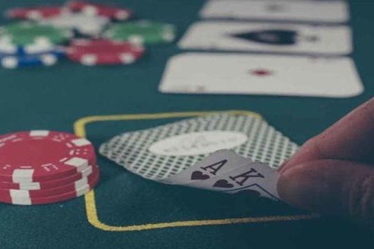
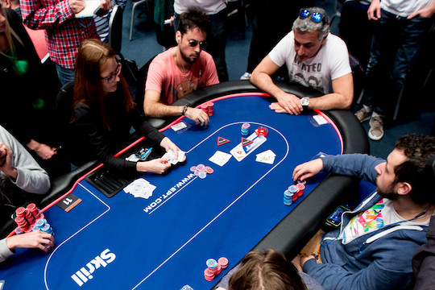
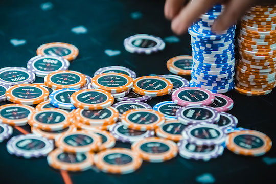
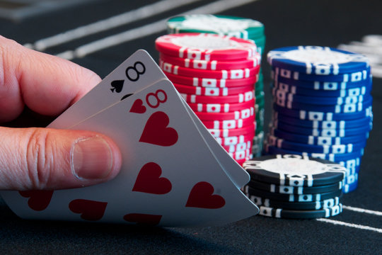

Introduction
The focus of this website is No Limit Texas Hold'em Poker, which is by far the world's most popular variant of poker, and is one of the world's best and most intriguing and challenging games.
Poker is a betting game based on patterns of cards. The Texas Hold 'em variant of the poker rules sees players receive two cards, face down, often called 'the hole', at the start of the game. The first round of betting occurs at this point. Three communal cards are then dealt face-up in the center of the table, generally known as 'the flop', followed by another round of betting. Two more communal cards are dealt, with rounds of betting in between, with the fourth card being called 'the turn' and the fifth and final being called 'the river.' The player's aim is to attempt to make poker 'hands' from their two personal cards and the communal cards in the center of the table.
One of the main reasons why No Limit Texas Hold'em is so exciting is that players can bet any or all of their chips at any point - creating a high-risk and potentially high-reward variant of the game.
With such a huge part of poker being about the chips themselves, this website has been created so that from a variety of styles, materials and designs of poker chips, you can choose the ones that will be the perfect foundation for your poker game.
|

|

|

|

|
History of the game
Thought to have emerged in the early 1900s, the small town of Robstown in Texas is credited with being the birthplace of Texas Hold'em poker. According to Texas State Legislature archives, this location was the first where a hand of this variant was ever dealt.
The obscurity of the game began to change when the game was introduced to the gambling mecca of Las Vegas. It was here that Hold'em first appeared in 1967, when renowned poker connoisseur Crandell Addington declared the game as being more refined than other variants, due to the skill and strategy involved.
Poker Hall of Fame veteran Doyle Brunson gave Texas Hold'em the publicity it deserved when he wrote and published 'Super System', his guide to Hold'em strategies, in 1978. It was an instant hit, generating widespread appreciation of the game.
After the book had elevated the profile of Texas Hold'em, the final breakthrough in the game's popularity came with a California legal battle through the 1980s. In a famous case the court resolved that Texas Hold'em was actually a game of strategy, rather than of chance, denying the right of the State of California to continue deeming the game illegal. From that point, the boom spread far and wide.
Hand rankings
- Straight flush (highest is 'royal flush')
- Four of a kind / quads (highest is 'quad aces')
- Full house / boat (highest is 'aces over kings')
- Flush (highest is 'nut flush')
- Straight (highest is 'broadway')
- Three of a kind / set or trips
- Two pair
- Pair
- High card